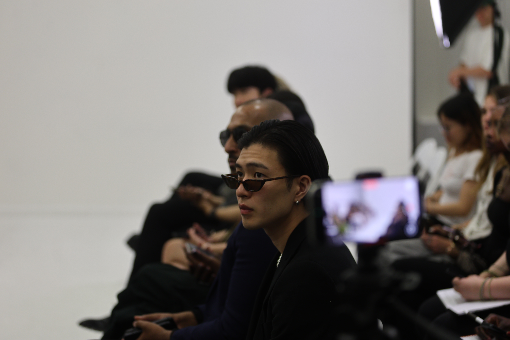
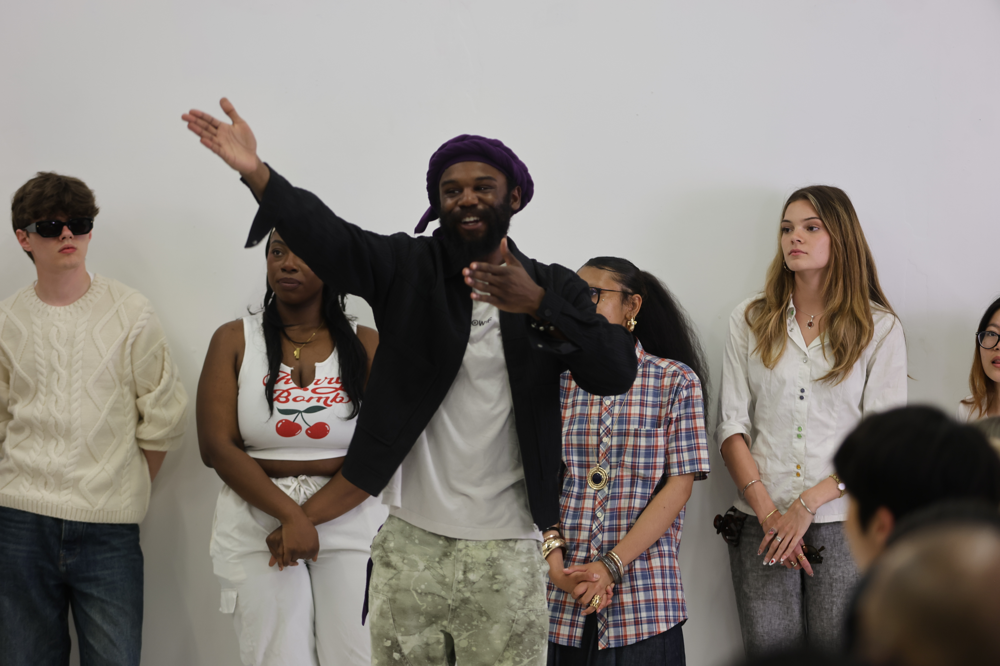
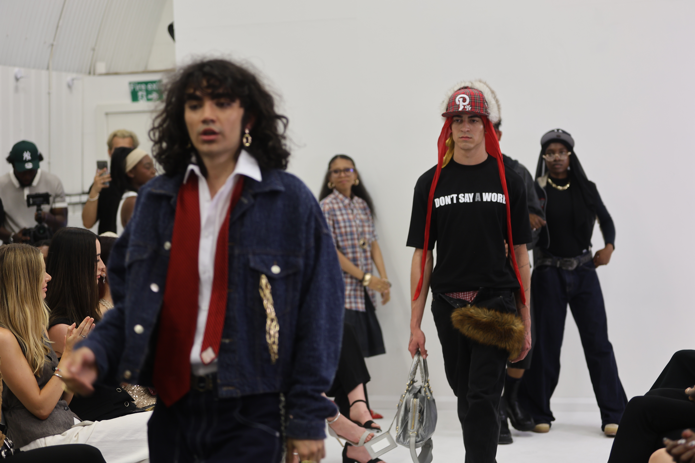
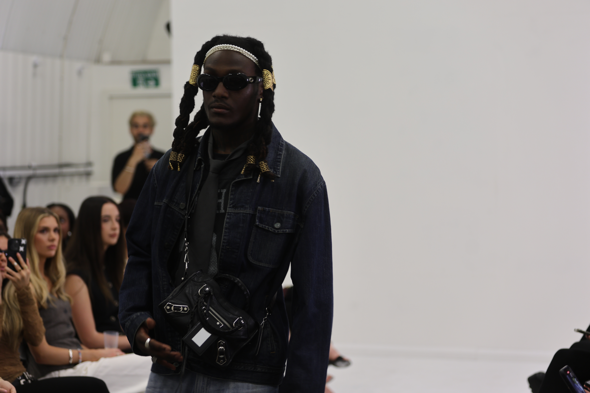
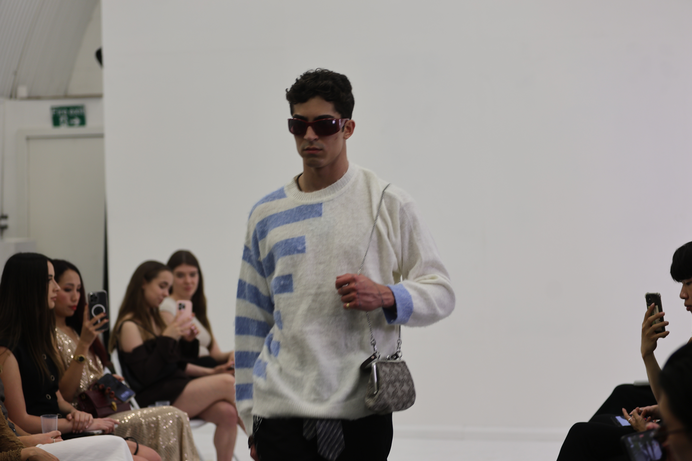
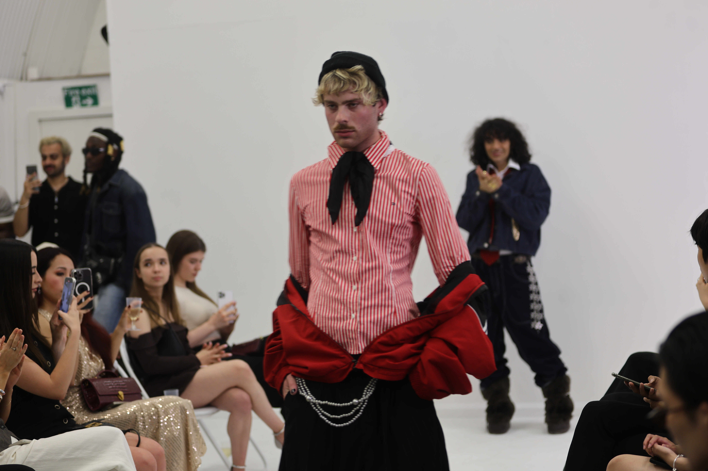
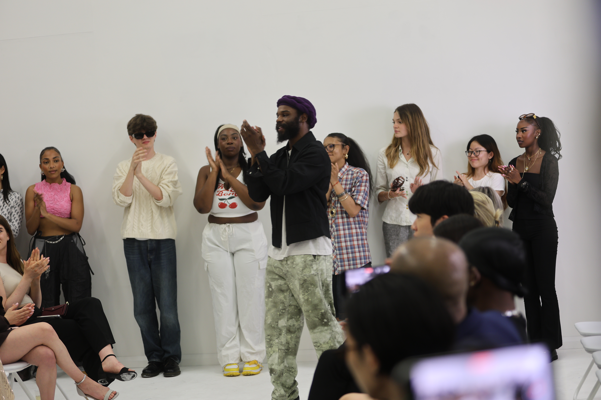
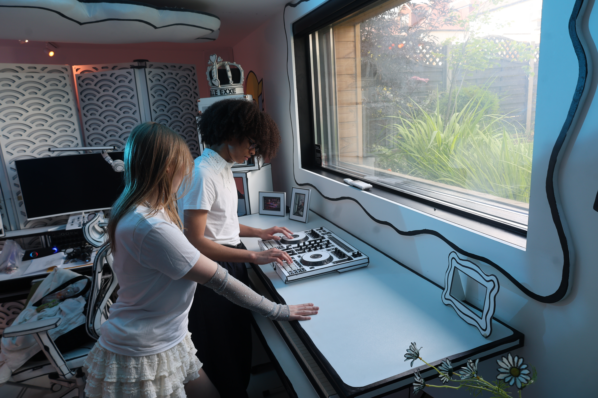
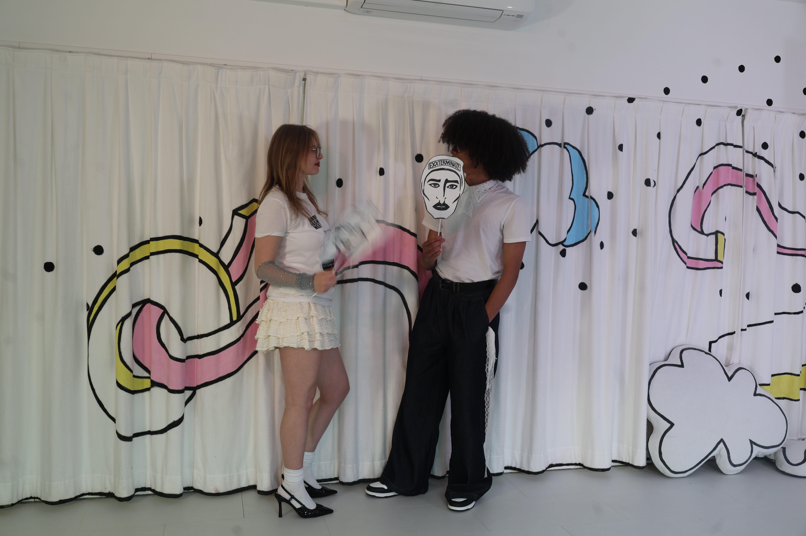

Behind the Summer Fashion Show: Adonis Musa
Adonis Musa, founder of Musa Showroom and creative director of The Stylist Collective, brings together fashion, culture, and storytelling through global runway events. His latest project — a 30-look menswear collection — was presented at London Fashion Week in June 2025 as part of an international tour including New York, Milan, and Paris.
The Stylist Collective highlights diverse, independent brands and celebrates fashion as a form of cultural expression.
We had the pleasure of attending and photographing the event as press media photographers.
Below are selected images from Adonis Musa’s latest SS26 menswear collection.







How We Built a Creative Workshop in 3 Days
As representatives of Innovate Generation, we organized a professional photo session featuring models Niki and Jesaiah — two talented young creatives from our community. We spent three hours in the Doodilo studio in Greenwich, capturing powerful images for use on a professional website. It was a working session, but also a fun and inspiring experience for everyone involved.
We typically build this type of creative session in just three days using the following steps:
- Book the photography studio in advance — we recommend choosing a space that provides lighting and enough room for movement.
- Confirm a fixed date and time that works for both the models and photographer.
- Prepare a styling plan: clothing, accessories, and any props needed.
- Double-check that lighting equipment is available or bring your own setup.
- Create a session plan with a moodboard and suggested poses for the photographer.
- Book the studio for longer (ideally 5 hours) — to avoid rushing and reduce stress.


This approach gives everyone the chance to work creatively and professionally, without pressure — and ensures the final results look polished and cohesive.
GWI's Connecting the Dots 2025 Report: 8 Key Consumer Trends
The latest report from GWI highlights 8 major shifts in consumer behavior that will shape the market in 2025:
-
Podcasts are reshaping the ad game:
Podcasts have overtaken radio as the preferred audio format. Ads in podcasts are becoming more powerful thanks to high listener trust and deeper engagement with hosts.
-
Side hustles are the new normal:
More people — not just Gen Z — are taking on side jobs or passion projects. It reflects a shift in how careers are viewed, with greater focus on freedom, flexibility, and financial independence.
-
The women’s sports boom:
There’s a growing global interest in women’s sports, creating new opportunities for brands and sponsors. The rise of leagues like the WNBA and women’s football shows this isn’t just a moment — it’s a movement.
-
Energy drinks go mainstream:
Nearly half of all consumers now drink energy drinks regularly. The audience is becoming more diverse, expanding beyond the typical young male demographic.
-
Teens are rethinking college:
Young people, especially in the U.S. and UK, are starting to question the value of traditional university degrees. Many are choosing online learning, apprenticeships, or direct routes into tech and creative careers.
-
Smart home security tech quietly rises:
Interest in smart home security systems is steadily increasing. Consumers value connected, tech-based solutions that offer both safety and convenience — a quiet but impactful trend.
-
Video podcast ads are on the rise:
Video podcasts, especially on YouTube, are gaining popularity. Brands are taking advantage by placing visual ads, product placements, and logos within recorded shows and livestreams.
-
TikTok Shop drives social commerce:
TikTok Shop is transforming online shopping. Half of U.S. users have made a purchase through the platform, and 90% say they’d do it again. Fashion, beauty, and lifestyle lead the way, but quality and trust are growing concerns.
What This Means for Brands
Marketing: Explore podcast partnerships – people trust them more than traditional ads.
HR/Recruiters: Prepare for flexible work demands and employees balancing side hustles.
Sports Industry: Back female athletes and competitions – the audience is growing fast.
E-commerce: Use AI and seamless cross-platform strategies to win over shoppers.
Brand Identity: Authentic values, ethics, and transparency are crucial in 2025.